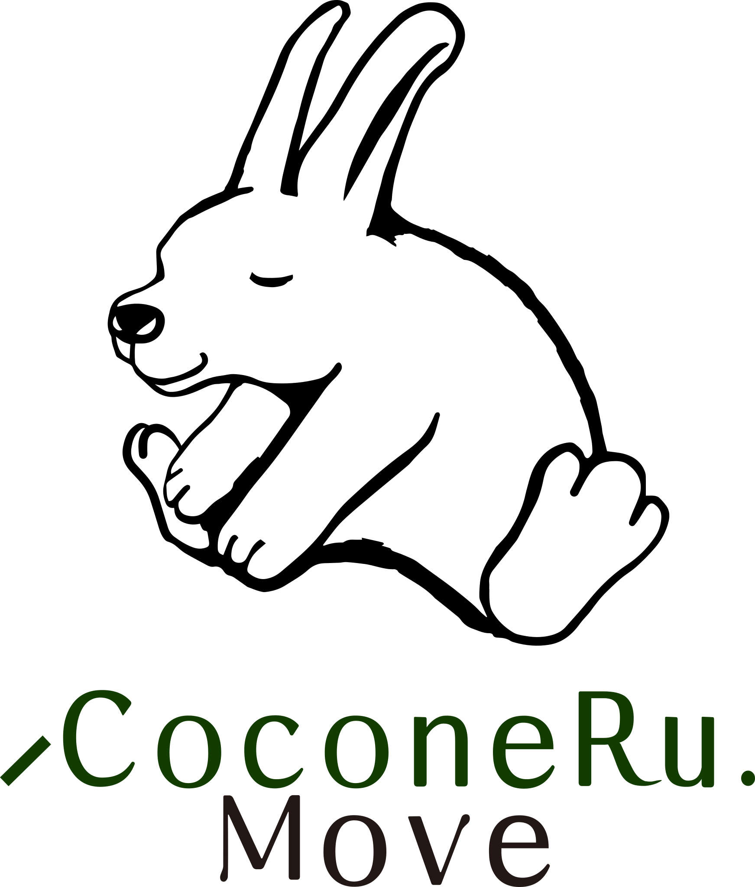
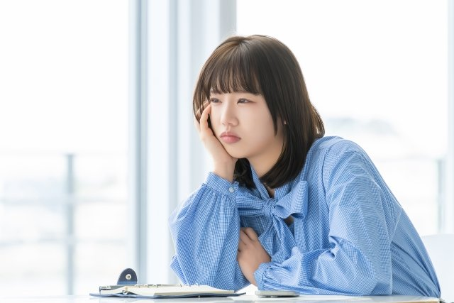
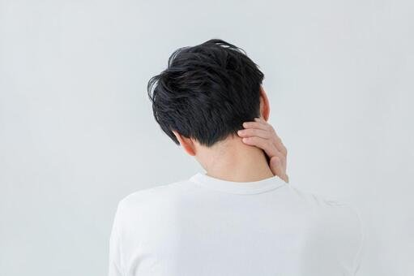

肩や首がガチガチ
デスクワークで固まりやすい上半身を整えます。

整体・ピラティス・ストレッチを組み合わせ、休息で整えた身体を日常で使える状態へつなげます。
For These Concerns
肩こり・首こり・腰の重さ、姿勢の崩れ、体の硬さ、運動不足。休んでも戻ってしまう不調を、身体の使い方から見直します。
デスクワークで固まりやすい上半身を整えます。

猫背・反り腰・骨盤バランスを確認します。

強すぎる負荷ではなく、続けやすさを重視。
パーソナルだから、その日の体調に合わせられます。
Move Concept
「頑張る」よりも「続ける」を大切に。いきなり鍛えるのではなく、整体で身体をゼロへ戻し、ピラティスで日常に必要な動きをプラスしていきます。

運動が苦手な方や久しぶりに身体を動かす方でも始めやすいよう、負荷やペースを一人ひとりに合わせます。
整体・ストレッチで可動域を整え、ピラティスで正しい動作を覚えることで、不調が戻りにくい身体を目指します。
横須賀中央駅から通いやすい立地で、整体だけ、ピラティスだけ、組み合わせなど目的に合わせて選べます。
Personal Training
CoconeRu. Moveは、横須賀中央駅から徒歩4分のパーソナルジム。整体×ピラティスをマンツーマンで組み立てる、あなただけのパーソナルトレーニングです。大勢の中で頑張るのが苦手でも、自分のペースで続けられます。男性・女性どちらもご利用いただけます。
その日の体調や目標に合わせて、一人ひとりにメニューを組み立てます。運動が久しぶりの方や、ジムが初めての方も歓迎です。
姿勢と体幹を整えながら、続けられる運動習慣づくりをサポート。無理な食事制限ではなく、動ける身体と引き締めを目指す体づくりです。
デスクワークで固まった肩や首、腰の重さを、整体とストレッチでほぐしながら整えます。
Why Recovery Matters
姿勢や呼吸、肩まわりの使い方が変わると、日中の疲れ方が変わります。結果として、CoconeRu.で整えた睡眠と回復の状態が日常に戻りやすくなります。
猫背・反り腰・肩の巻き込みを、動作の癖から見直します。
体幹と胸郭の使い方を整え、浅い呼吸に戻りにくい状態を目指します。
日中の余計な緊張が減ると、夜の回復が深まりやすくなります。
Menu
パーソナルトレーニング、パーソナルピラティス、カスタムトレーニング、パワープレート&ストレッチ、スポーツ整体まで、目的に合わせて対応します。肩こりや腰の重さ、姿勢の崩れなど、休息だけでは戻りやすい不調を、動作の習慣から整えます。
インナーマッスルを中心に整え、姿勢改善と体幹強化を目指します。
パワープレート・ストレッチ・ピラティス・整体を目的に合わせて組み立てます。
短時間で全身へアプローチし、筋力・代謝・柔軟性をサポート。
筋肉の緊張をほぐし、可動域を広げながらコリや疲労を整えます。
Facility
〒238-0008 神奈川県横須賀市大滝町2-11 ヤシマビル2F。営業時間10:00-20:00、不定休です。


FAQ
横須賀中央のパーソナルトレーニングについて、はじめての方から多い質問をまとめました。
Next Step
まずは初回体験で、身体の状態を一緒に確認しましょう。運動が苦手な方も、久しぶりの方も大丈夫。眠りや回復から整えたい方はCoconeRu.との併用もおすすめです。